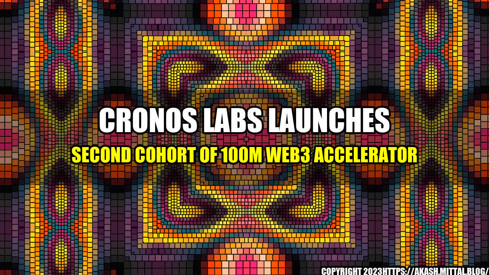

Cronos Labs Launches Second Cohort of 100M Web3 Accelerator

Have you heard about the Web3 space? It's a whole new world of innovation and opportunity, and Cronos Labs is at the forefront of it all. The company has just launched its second cohort of the 100M Web3 accelerator, and the future looks brighter than ever.
What is Web3?
Web3 is a term that refers to the next evolution of the internet. It's a decentralized and open-source platform built using blockchain technology, which makes it more secure, transparent, and democratic. Web3 is also home to cryptocurrencies and other digital assets, which are transforming the way we think about money and finance.
In Web3, users have more control over their data and identity, and they can participate in decentralized applications (dApps) that run on a peer-to-peer network without the need for intermediaries. This creates new opportunities for innovation, collaboration, and value creation.
What is Cronos Labs?
Cronos Labs is a company that is dedicated to accelerating the growth and adoption of Web3 technologies. They provide funding, mentorship, and support to startups and entrepreneurs who are building the next generation of dApps, protocols, and platforms.
With their 100M Web3 accelerator program, Cronos Labs is investing in the best and brightest minds in the industry and helping them bring their ideas to life. The program offers access to a wide network of investors, experts, and resources, as well as guidance on product development, customer acquisition, and fundraising.
What are the benefits of Web3?
The benefits of Web3 are numerous and significant. Here are some examples:
- Decentralization: Web3 allows for a more decentralized internet, which is less susceptible to censorship, control, and manipulation by central authorities. This can help promote freedom of speech, privacy, and security.
- Transparency: Web3 enables transparent and auditable processes, where all transactions and interactions are recorded on a public ledger that can be easily verified. This can help reduce fraud, corruption, and error in various industries.
- Innovation: Web3 encourages innovation by providing a fertile ground for experimentation, collaboration, and co-creation. It allows developers to build decentralized applications that can improve many aspects of our lives, such as finance, healthcare, energy, and governance.
- Financial inclusion: Web3 provides access to financial services and opportunities to people who are currently underserved or excluded by traditional financial systems. It allows anyone with an internet connection to participate in the global economy, regardless of their location, background, or status.
What are some examples of Web3 applications?
There are already many exciting and innovative Web3 applications that are transforming various industries and sectors. Here are some examples:
- Ethereum: Ethereum is a blockchain platform that allows developers to build decentralized applications and smart contracts. It has enabled many other Web3 applications, such as decentralized exchanges, prediction markets, and games.
- Filecoin: Filecoin is a decentralized storage network that allows users to rent out their storage space and earn tokens in exchange. It provides a more secure, efficient, and cost-effective way to store and retrieve data, compared to centralized cloud services.
- Golem: Golem is a decentralized computing network that allows users to rent out their idle computing power and earn tokens in exchange. It provides a more affordable, flexible, and scalable way to perform complex computations, such as rendering, AI, and simulations.
- Uniswap: Uniswap is a decentralized exchange that allows users to swap tokens without the need for a central party. It uses an automated market maker algorithm to determine prices and liquidity, and it has become one of the most popular Web3 applications in terms of trading volume and adoption.
What does the future hold for Web3?
The future of Web3 is exciting and unpredictable. It's a nascent and fast-moving industry, with many challenges and opportunities that lie ahead. However, there are some trends and possibilities that are worth considering:
- Interoperability: Web3 is still fragmented and siloed, with many different blockchains, protocols, and standards. Interoperability could help bridge these gaps and enable seamless communication and collaboration between different Web3 applications and networks.
- Mass adoption: Web3 is still relatively unknown and complex for many people, and it has faced some resistance and skepticism from regulators and incumbents. Mass adoption could help overcome these barriers and create more demand and use cases for Web3 technologies.
- Sustainability: Web3 is still in its early stages, and it has already faced some environmental and scalability issues. Sustainability could help ensure that Web3 is built in a way that is environmentally friendly, socially responsible, and economically viable in the long term.
Conclusion
In conclusion, Web3 is a fascinating and promising space that is ripe for innovation and disruption. Companies like Cronos Labs are helping to accelerate the growth and adoption of Web3 technologies, and the second cohort of their 100M Web3 accelerator is a testament to the potential and excitement in this industry. With the benefits of decentralization, transparency, innovation, and financial inclusion, as well as the examples of Ethereum, Filecoin, Golem, and Uniswap, Web3 is a space worth exploring and investing in. As the future of Web3 unfolds, we can expect to see more interoperability, mass adoption, and sustainability, and we should be ready to embrace these changes and opportunities.
References:
Hashtags:
- #Web3
- #blockchain
- #cryptocurrency
- #CronosLabs
- #accelerator
Category:
Technology
Curated by Team Akash.Mittal.Blog
Share on Twitter Share on LinkedIn